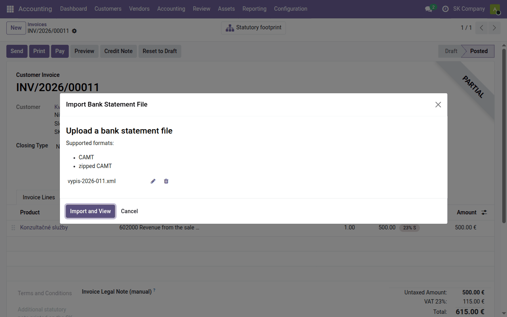
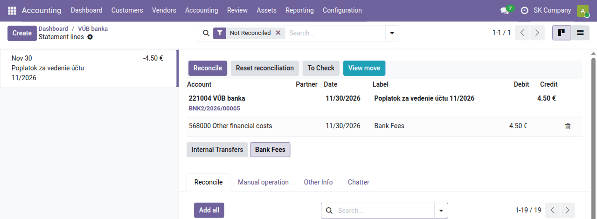

Task guide
Bank
A bank account in Odoo, importing a CAMT statement, matching by variable symbol, bank fees and payment orders to suppliers — and what each step posts.
| Country | Slovakia |
|---|---|
| Edition | Odoo Community |
| Covers | account, account_statement_import_base, account_statement_import_file, account_statement_import_camt, account_statement_import_camt_balance, account_reconcile_oca, account_reconcile_oca_counter_account, l10n_cssk_payment_symbols, l10n_cssk_payment_symbols_oca, account_payment_order, account_payment_mode, l10n_cssk_payment_symbols_payment_order, account_banking_sepa_credit_transfer, l10n_cssk_payment_symbols_sepa_oca, account_fio, account_statement_fio, account_tatrabanka (delivered separately), account_statement_tatrabanka (delivered separately) |
What this guide is for
In Odoo the bank statement is where payments come from: an invoice is paid when its open item is matched with a statement line. This guide follows the whole cycle — from creating the bank account through importing a statement and matching to a payment order to suppliers — and what each step posts.
The terms and menus are explained in Odoo for a Slovak accountant, the bank journal's accounts in Setting up account assignment.
Bank account
Every bank account is a bank journal in Odoo, with a 221 sub-account of its own. Create one in Accounting → Configuration → Accounting → Journals → New: Type Bank, a name (for example VÚB banka) and, on the Advanced Settings tab, the Account Number (IBAN). Odoo creates a 221 account named after the journal (for example 221004 VÚB banka) and sets the Suspense Account to 261000 Money in transit.
On the Accounting dashboard every bank journal has a card with its balance, the number of unmatched lines, and buttons to import and match.
Importing a statement
Slovak banks (Tatra banka, Slovenská sporiteľňa, VÚB, ČSOB, 365.bank and others) let you download the statement from internet banking as CAMT.053 (XML). Download it for the period not yet in Odoo, then:
- on the bank's card on the dashboard click Import (OCA), or use Accounting → Accounting → Import Statement;
- Upload your file and Import and View.
Odoo picks the bank journal from the IBAN in the statement, takes the opening and closing balances, and creates a line for every movement.
Do not import the same statement twice. The CAMT import does not detect a duplicate and creates a second statement with the same movements. Download statements for consecutive periods and look at Last Statement on the bank's card before importing; delete a statement imported by mistake before its lines are matched.

If the bank's card has no import button (the journal existed before the import was installed), set the journal's Bank Feeds field to the file import.
On import, the payment symbols — VS, KS, ŠS — are read from each line's
reference (/VS202600010/SS/KS0308), label and note, and the variable symbol
is written at the start of the line's label. The partner is filled in from
the counterparty's account number when you have that account on a partner:
l10n_cssk_payment_symbols.
If the import refuses a statement because "the balance does not match"
although the file is correct (some banks report daily intermediate balances
or the balance in another form), install the fix
account_statement_import_camt_balance
from Apps.
Other ways to get a statement in:
- Fio banka — statements are fetched automatically through the Fio API:
account_statement_fio, from Apps. - Tatra banka — movements are fetched every hour through the Premium
API:
account_statement_tatrabanka(delivered separately); our team switches it on on request. - By hand — Accounting → Accounting → Bank and Cash → Bank Statements → New.
Automatic matching
Already on import, statement lines are matched with open invoices by variable symbol:
- exactly one open invoice carries the symbol → it is matched;
- several do → the one whose open amount equals the payment is taken, if exactly one does;
- when the payer is known (from the account number), only their documents are considered;
- leading zeros are ignored (
0042=42).
A partial payment is matched and the rest of the invoice stays open. An
overpayment is never matched automatically — it is left to you. The module
never guesses: whatever is ambiguous is left for manual matching
(l10n_cssk_payment_symbols_oca).
Posting of matched lines:
| Statement line | Account | Debit | Credit |
|---|---|---|---|
| Payment from a customer, 4,920 € | 221004 VÚB banka | 4,920 | |
| 311000 Receivables | 4,920 | ||
| Payment to a supplier, 98.40 € | 321000 Suppliers | 98.40 | |
| 221004 VÚB banka | 98.40 |
Manual matching
What was not matched automatically is in Accounting → Accounting → Reconcile, or behind the … to reconcile button on the bank's card. On the left are the unmatched statement lines, on the right the proposed entry and, on the Reconcile tab below it, the open items of customers and vendors.

- Paying an invoice: click the invoice in the list of open items (search by partner, amount or number), check the proposed lines, and click Reconcile.
- A bank fee, interest, a transfer between your own accounts: the Bank Fees and Internal Transfers buttons above the tabs fill in the counter-account in one click.
- Anything else: the Manual operation tab — account, partner, label and amount typed by hand.
- To Check sets a line aside when you are unsure; Reset reconciliation puts a matched line back.
For a payment with no symbol, the payer's account number, which the
reconciliation screen shows next to the statement line, helps
(account_reconcile_oca_counter_account).
Put that account number on the partner and Odoo recognises them next time.
The Bank Fees button posts the fee to the account set in Accounting → Configuration → Accounting → Reconciliation Models → Bank Fees. With the Slovak chart Odoo sets it wrongly to 501000 Material consumption; change it to 568000 Other financial costs. Check as well that the Internal Transfers model goes to 261001 Liquidity Transfer.
| Statement line | Account | Debit | Credit |
|---|---|---|---|
| Account maintenance fee, 4.50 € | 568000 Other financial costs | 4.50 | |
| 221004 VÚB banka | 4.50 |
Until a line is matched, it is posted against 261000 Money in transit. The balance of 261000 is therefore the sum of unmatched movements — at the end of the month it should be nil.
Payment order to suppliers
Payments of vendor bills are prepared in Odoo in bulk and uploaded to the bank as one SEPA file (pain.001):
- Once, install the Account Banking SEPA Credit Transfer module from Apps, and in Accounting → Configuration → Accounting → Payment Modes create a mode, for example SEPA transfer: Payment Method SEPA Credit Transfer to suppliers, Link to Bank Account Fixed, Fixed Bank Journal your bank journal.
- Accounting → Vendors → Payment Orders → New, choose the Payment Mode and the Payment Execution Date Type (Immediately, Due Date or Fixed Date).
- Create Payment Lines from Journal Items → Add All Move Lines (or only selected ones) → Create Transactions. Each line gets the vendor's IBAN, the amount, and the bill's VS, KS and ŠS.
- Confirm Payments and Generate Payment File. Download the file and upload it to internet banking, where you authorise the order.
- Click File Successfully Uploaded. The bills move to In Payment.
Together with the SEPA module,
l10n_cssk_payment_symbols_sepa_oca
is installed, which writes the VS, KS and ŠS of each bill into the file as
/VS…/SS…/KS…, the form Slovak banks read, and pays bills with different
symbols by separate transfers. Where the symbols go can be changed on the
bank journal, option CZ/SK Symbols in SEPA Transfers. Before the first
real order, send one test payment and check how the payee sees it.
Posting. When the upload is confirmed, each payment posts:
| Document | Account | Debit | Credit |
|---|---|---|---|
| Payment (File Successfully Uploaded) | 321000 Suppliers | 98.40 | |
| 221003 Outstanding Payments | 98.40 | ||
| Statement line (matched with the payment) | 221003 Outstanding Payments | 98.40 | |
| 221004 VÚB banka | 98.40 |
When the payment appears on the statement, the statement line is not matched automatically — the bill is already settled by the payment, which waits to be matched with the bank. In Reconcile, match it with the payment's item on account 221003 (find it in the list by vendor or amount). The balance of 221003 is the payments sent to the bank and not yet matched with a statement.
Month-end check
- The closing balance of the last statement in Odoo equals the balance on the bank's statement (the bank's card on the dashboard, Last Statement).
- 261000 Money in transit is nil — nothing waits to be matched.
- 221002 Outstanding Receipts and 221003 Outstanding Payments hold only payments the bank has really not yet credited or debited.
See the accounts in Accounting → Reporting → OCA accounting reports → General Ledger or Trial Balance for the month.